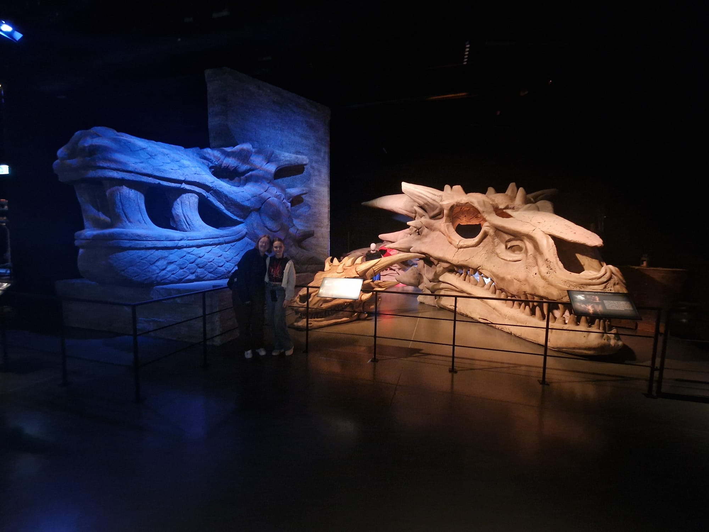

Dragon skull

The artists of the Sculpting Department carve and shape
a wide array of materials including clay,glass,stone,plastic,metal and
foam. Their creations range from full-size statues,props and architectural
feautures to maquettes or models of creatures like dragons and direwolves - even
the occasional giant dragon skull. The process begins with a sketch or illustration
from the art Department that tthe sculptors the transform into an impressive 3D set piece.(Source: ''game of thrones studio tour:the offical guide'')
Map Room

The map table in the room is carved in clay. Working from a
paper map the same size as the finished table, the props team
traced it onto a large clay block,then sculpted it in full detail.
it is 16.5ft/5m long and required 8-10 crew members to move. They
created individuel letter stamps to incise names for every place, castle
and tower in Westeros. Looking for a way to make landmarks more visible in
the dim light,they used molten copper to mark roads,emeralds for trees, and other
natural materials to highlight man-made structures like castles.(Source: ''game of thrones studio tour:the offical guide'')